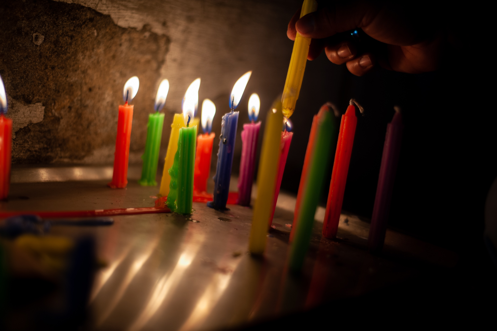
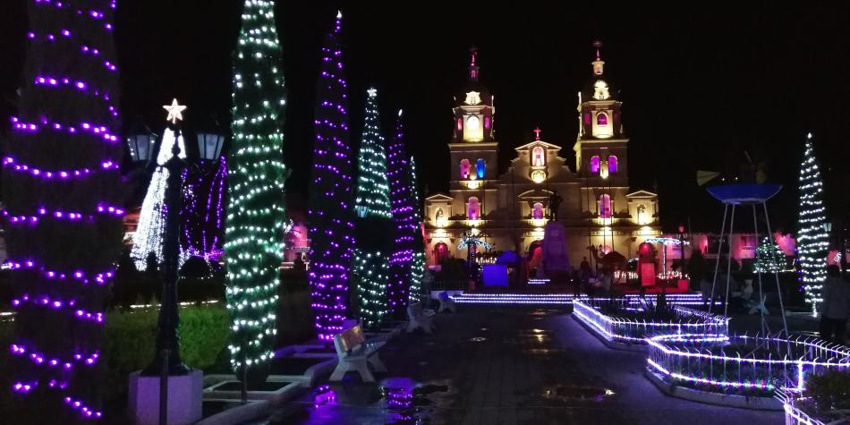
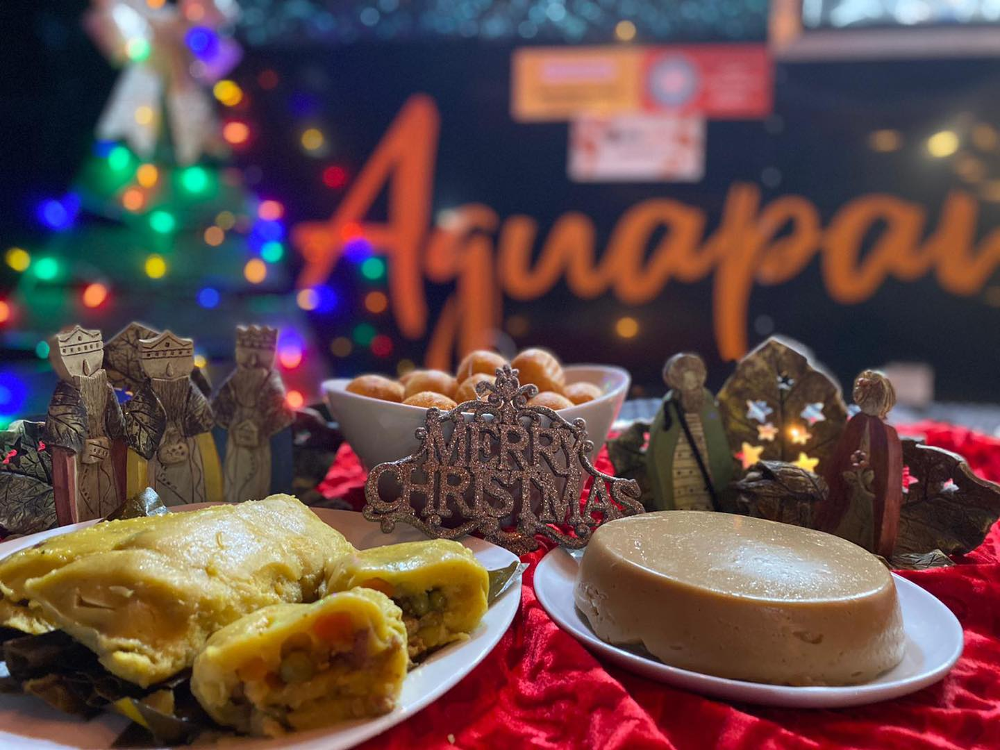

MULTIMEDIA
Document
Desde septiembre se siente que llego diciembre
En Colombia, la Navidad y las fiestas decembrinas son una fuente de alegría que esperamos con ansias desde el primero día de septiembre.
Esta anticipación se debe a nuestra profunda conexión con las tradiciones navideñas y la importancia que damos a la unión familiar.
Desde septiembre, nuestras calles se llenan de luces y decoraciones festivas, y nuestras casas se adornan con cariño.
La Navidad es un momento de compartir, reflexionar y agradecer por lo que tenemos. Las festividades nos unen, fortaleciendo nuestros
lazos familiares y comunitarios.
En resumen, los colombianos anhelamos la Navidad desde septiembre porque representa amor, tradición y la oportunidad de estar juntos,
celebrando lo que realmente importa en la vida.
algunas de las tradiciones que esperamos con ansias celebrar son:
- Inaguramos el mes con la bonita celebracion de dia de velitas

- Es muy comun reunirse en familia y salir a disfrutar de los alumbrados navideños que por estas fechas decoran nuestras ciudades.

- Y no nos podemos olvidar de las deliciosas comidas que acompañan estas fechas como lo son la natilla, buñuelos y tamales.
